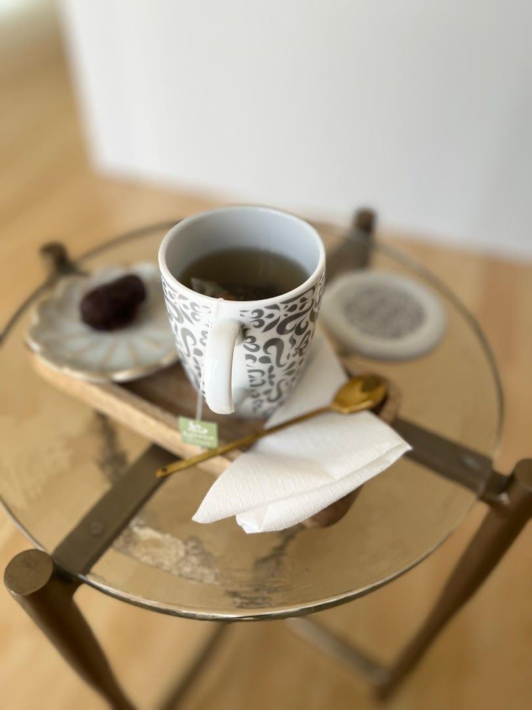

Head Spa
Cuidado del cuero cabelludo y el cabello en un ritual dedicado a la relajación.
Solicitar este ritualUN REFUGIO EN PUERTO DEL ROSARIO
Rituales Head Spa, cuidado facial y bienestar.
Un tiempo que empieza y termina contigo.

BAJA EL RITMO
En ONRITUAL, el cuidado empieza con una bienvenida tranquila. La luz, los aromas y la atención personal acompañan cada tratamiento hasta ese último momento de descanso.
LA CARTA DE BIENESTAR
Cuidado del cuero cabelludo y el cabello en un ritual dedicado a la relajación.
Solicitar este ritualUna experiencia que combina cabeza, pies y piernas en la misma sesión.
Solicitar este ritualMasaje facial japonés con el cuidado personal de ONRITUAL.
Solicitar este ritualUna pausa para dedicar atención al cuerpo y al descanso.
Solicitar este ritualUn momento para cuidar la piel y recuperar la sensación de frescura.
Solicitar este ritualCuidado de los pies en un ambiente tranquilo. Consulta las opciones disponibles al reservar.
Pregunta por este ritualAtención personalizada para conocer las necesidades del cabello y el cuero cabelludo.
Pregunta por este ritualEntrenamiento facial con técnicas Kobido y método propio del centro.
Pregunta por este ritualPrecio y duración a consultar. El equipo te orienta al reservar.
MIRA, RESPIRA
AGUA, CALIDEZ Y CUIDADO
Entra en la sala donde el ritmo cambia. La luz cálida y el espacio preparado para cada tratamiento invitan a dedicarte un momento de atención.
Reserva tu momentoTU REFUGIO EN FUERTEVENTURA
Materiales naturales, detalles cuidados y una bienvenida cercana. Descubre la recepción y los rincones de ONRITUAL antes de tu visita.
Reserva tu momentoSABOREA LA PAUSA
Una taza, un rincón tranquilo y unos instantes para disfrutar del momento. Los pequeños detalles también forman parte de la experiencia.
Reserva tu momentoAcércate a nuestros rituales, mira el centro en movimiento y descubre esos detalles que hacen especial cada visita. Sigue a ONRITUAL y guarda ideas para tu próximo momento de bienestar.
Descubrir ONRITUAL en InstagramRituales, vídeos y momentos del centro.
CÓMO ES TU VISITA
Una bienvenida tranquila y una conversación sin prisas sobre cómo te sientes y qué necesitas.
Te ayudamos a escoger el tratamiento más adecuado para ti y para ese día.
Luz cálida, aromas suaves y atención personal mientras el ritmo baja poco a poco.
Una taza y unos minutos en el rincón de descanso antes de volver a tu día.
UN REGALO QUE SE SIENTE
Un ritual en ONRITUAL es un regalo para quien más quieres: una pausa de verdad, pensada solo para cuidarse. Escríbenos y te ayudamos a elegir el ritual y a preparar el regalo.
Preparar un regalo por WhatsAppIdeal para cumpleaños, Navidad o simplemente porque sí.
ANTES DE TU VISITA
Es un ritual de origen japonés dedicado al cuero cabelludo y al cabello: limpieza, masaje y cuidado en un ambiente pensado para relajarte. En ONRITUAL lo acompañamos de un análisis capilar personalizado.
Depende del tratamiento que elijas. Al reservar te confirmamos la duración y el precio para que puedas organizarte con calma.
No hace falta que traigas nada. Ven con tiempo, sin prisas, y cuéntanos si tienes alguna sensibilidad o algo que debamos tener en cuenta.
Atendemos con cita previa. Puedes escribirnos por WhatsApp, llamarnos o enviar tu solicitud desde el formulario de esta página y te confirmamos la cita.
Sí. El espacio y los aseos están adaptados para personas en silla de ruedas.
Puedes pagar con tarjeta de crédito o débito y con pago móvil NFC.
TU ESPACIO PERSONAL
Consulta el 15 % de bienvenida para tu primera visita. El centro confirmará las condiciones y el precio al reservar.
Consultar descuento de bienvenidaRESERVA TU MOMENTO
Contacta para confirmar tu tratamiento, precio y disponibilidad.
Horario consultado en Google Maps el 13/11/2026.
El equipo te ayudará a elegir el ritual más adecuado y a encontrar tu cita.
Se abrirá tu aplicación de correo o WhatsApp con la solicitud preparada. Completa el envío allí. La cita queda pendiente de confirmación del centro.